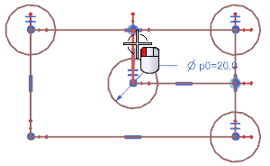
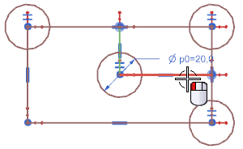
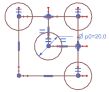

Add equal length constraints
-
In the Constraint group, click Equal Length
 .
.
-
Select the line as shown.

NX automatically advances to the Select Object to Constrain to selection step because the Automatic Selection Progression check box is now selected.
-
Select the line as shown.

The two lines are the same length.

-
Close the part now or close all parts when you exit the session.